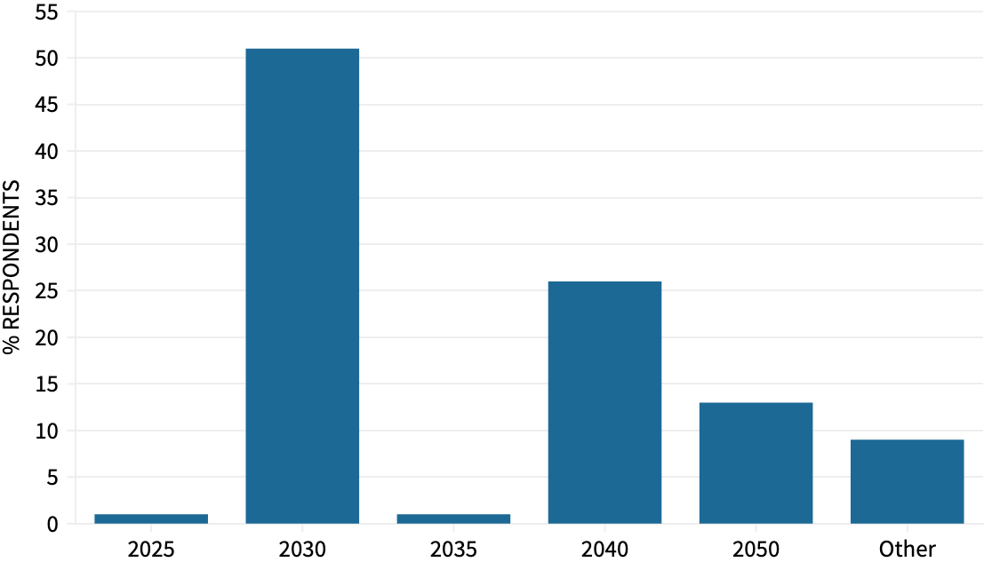

An initial summary of public consultation responses to the first draft of the Devon Carbon Plan has found a clear majority in favour of a 2030 target date for Devon decarbonisation.
The consultation on the Devon Carbon Plan draft, which ran from 7 December 2020 to 15 February 2021, received 1,321 responses from individuals and a variety of organisations across the county.
51% of respondents said 2030 should be the date by when the county should achieve “net zero” carbon emissions, with some commenting that the urgency of the situation required rising to the challenges involved in achieving this aim.
Just 13% of the survey’s respondents support the UK government’s 2050 target date. Devon County Council’s current policy is that the county should decarbonise by 2050 “at the latest”.
A report on the consultation response findings to the county council’s Climate Change Standing Overview Group said 2030 was a “popular” target year, but asked whether it was “realistic”. It nevertheless said as “early-as-possible should be incentivised” and highlighted “a risk of being too focused on a number” saying a “rapid initial carbon reduction” is more important.
At subsequent meetings an unspecified “compromise position” on a decarbonisation date that “could be palatable to all of the organisations in the Devon Climate Emergency partnership” was suggested.
 Interim Devon Carbon Plan consultation responses net zero target date preferences.
Data: Devon Climate Emergency Response Group.
The consultation’s 1,321 responses represent just over 0.11% of Devon’s population, although this was more than the 893 responses to the public call for evidence for the plan which took place in Autumn 2019.
Only around 45% were responses to the full-length 45 minute consultation questionnaire: the rest were responses to a brief ten minute survey. Some respondents said they were concerned by the length of the questionnaire, others commented they were pleased with its comprehensive scope.
Responses came from residents in all local authority areas in Devon, with only Plymouth under-represented, and organisations including political parties, environmental campaign groups, businesses, educational institutions and county, district, town and parish councils.
Nine webinars were held during the consultation period at which attendance varied between 50 and more than 100.
51% of individual respondents were female, 44% male and the remainder “other” or “preferred not to say”, reflecting Devon’s gender demographics. 32% were from individuals over 65 years of age while younger people were under-represented despite a targeted social media campaign aimed at reaching these age groups.
Interim Devon Carbon Plan consultation respondent age group proportions.
Data: Devon Climate Emergency Response Group.
The consultation also invited respondents to determine which of six questions laid out in the first draft of the Devon Carbon Plan should be prioritised for discussion at a citizens’ assembly of 70 Devon residents due to be held in July.
The questions are:
- How should Devon’s landscapes evolve in ways that positively support achieving net-zero and that are beneficial to their special qualities?
- The Committee on Climate Change scenarios for achieving net-zero require a 20% reduction in beef, lamb and dairy consumption nationally. What does this mean for Devon?
- What is the role of reducing road capacity in reducing traffic, and is it appropriate for Devon?
- To what extent should financial incentives and legislation be used to accelerate the retrofitting of buildings with energy efficiency and renewable energy technologies?
- What is the role of onshore wind energy in the Devon Renewable Energy Strategy? How can tensions between the support for onshore wind energy in theory and practice be reduced?
- To what extent would the use of financial mechanisms be acceptable to Devon’s citizens to help discourage activities that generate emissions and to fund emissions reduction?
Despite intending to determine which three of these issues should be prioritised if the citizens’ assembly does not have time to deliberate them all, the consultation found near-equal interest in all six, with a slight emphasis in favour of discussion around food and farming.
The assembly will consist of a total of 24 hours of deliberation spread across several days. The 70 participants are expected to be demographically and attitudinally representative of the population of Devon.
The citizens’ assembly will not be invited to discuss the date for achieving decarbonisation in Devon, despite some consultation respondents saying they thought it should.
Nor will it be invited to consider the Devon Carbon Plan’s dependence on carbon offsetting despite its increasing significance in climate policy-making.
The citizens’ assembly “recommendations” are intended to be “considered” and used to “inform” a revised draft of the Devon Carbon Plan, which will also incorporate changes resulting from consultation responses and further input from partner organisations. It is not clear whether detailed findings from the public consultation will be published as part of this process.
The plan’s authors do not, however, intend to update its emissions reduction trajectory in response to the UK government’s recently announced revised target of reducing 1990 greenhouse gas levels by 78% by 2035, despite this target exceeding the Devon Carbon Plan aim of reducing 2010 emissions by 50% by 2035.
Similarly, the announcement that the UK’s share of international aviation and shipping emissions would be included in national emissions reduction measures for the first time will not lead to significant changes in the Devon plan because aviation is “thought to be be less than 1% of Devon’s emissions”.
Original Devon Carbon Plan development timetable.
Source: Devon Climate Emergency Response Group.
A second public consultation, on the revised draft of the Devon Carbon Plan, was expected before a final version was agreed. However it now appears that this second public consultation has been scrapped, in which case the revised draft will go straight to partner organisations for approval.
This is one of several compromises that have been made to compensate for slippage in the plan development timetable, which originally intended the citizens’ assembly to begin in January last year with the final plan to be produced in September and approved during October and November.
Before the decision to scrap the second public consultation the plan delivery timetable was two years and two months behind schedule. Even with this change the Devon Carbon Plan is not expected to take effect until April 2022, three years after Devon County Council convened the Devon Climate Emergency Response Group.


{kind=link}